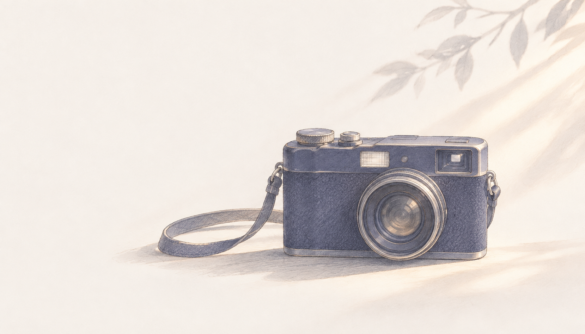

リール20本・写真30案。
参考投稿を見て、撮って、チェック。きれいな表情も、いつものなおいも。

1着目：写真→動画 ／ 2着目：写真→動画 ／ 最後に小物とオフショット
縦動画は9:16。動きの前後を2秒ずつ長めに撮る。写真は寄り・全身・細部をセットで。光と背景を整え、本人の好きな角度を先に確認。
読み込み中…
条件に合う撮影案がありません。
この端末にはチェックを保存できません。現在の画面ではそのまま使えます。
撮影案の表示にはJavaScriptを有効にしてください。 / Enable JavaScript to view the guide.